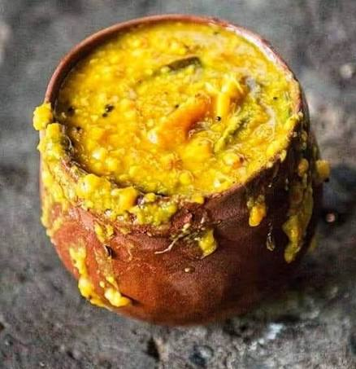
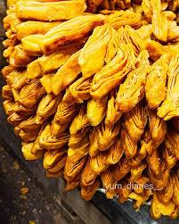
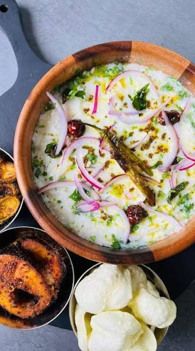
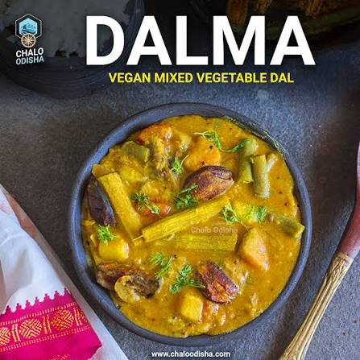
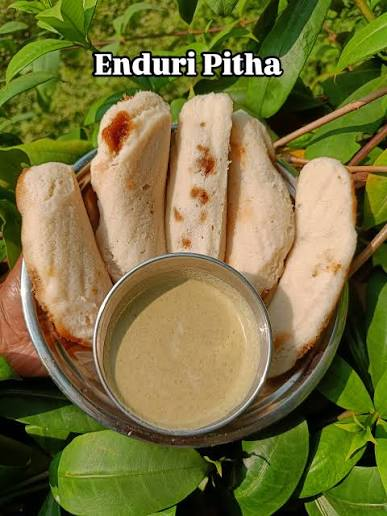
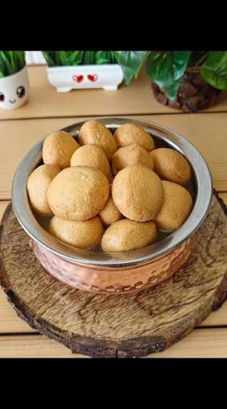

ଶ୍ରୀ ଜଗନ୍ନାଥ ଧାମ — Puri, Odisha
Shaligram
Paakshala
ଶ୍ରୀ ଶାଳଗ୍ରାମ ପାକ୍ଶାଳ
Ancient recipes from the kitchen of Lord Jagannath — preserved in old Odia books, prepared for centuries during festivals at the Puri temple. Each dish is prasad, each bite is blessing.
"ଅନ୍ନ ବ୍ରହ୍ମ ଇତି ବ୍ୟଜାନାତ୍ — ଅନ୍ନଂ ହି ଭୂତାନାଂ ଜ୍ୟେଷ୍ଠମ୍"
"Know that food is Brahman — food is the eldest of all beings."
— Taittiriya Upanishad 3.2.1
The Seven Sacred Dishes
Chhappan Bhog — offerings to the Lord, from the ancient kitchen at Puri

Mahaprasad Khichdi
The divine rice and dal offering of Lord Jagannath — cooked in earthen pots over firewood, the very first prasad of the day.
View Recipe →
Rasabali
Fried chhena patties soaked in thickened cardamom milk — a GI-tagged Odia sweet originating from the Baladevjew Temple of Kendrapara.
View Recipe →
Khaja
Layered, flaky, deep-fried wheat pastry soaked in sugar syrup — said to be Lord Jagannath's favourite sweet. Part of the 56 bhog since the 12th century.
View Recipe →
Pakhala
Fermented watery rice — ancient, probiotic, deeply Odia. Offered to Lord Jagannath at the Puri temple since the 11th century CE.
View Recipe →
Dalma
Toor dal simmered with seasonal vegetables, tempered with panch phoran and ghee — comfort food of the people and the gods alike.
View Recipe →
Enduri Pitha
Fermented rice cakes stuffed with jaggery and coconut, steamed inside fragrant turmeric leaves. Made for Prathamastami festival.
View Recipe →
Odia Rasagulla
The original rasagola — chhena balls simmered in caramelised sugar syrup. Mentioned in the 15th-century Jagamohana Ramayana of Balaram Das.
View Recipe →From Ancient Earthen Pots
The Jagannath temple kitchen has 240 hearths, nearly 1000 cooks, and the fire has never been extinguished. Food is cooked in new earthen pots every single day — the same way it was done over 500 years ago. This site is a humble tribute to that tradition.